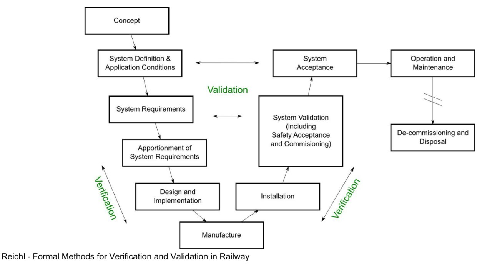

The EU has declared 2021 to be the year of rail. With the help of colorful posters, the Eurocrats emphasize the environmental friendliness of trains and the strengthening of the friendship between nations (aka “cross-border cooperation”), but somewhere in the third or fourth place, the word “safety” also appears. The most stringent guarantees of safety are provided by mathematics, which is tantamount to the use of formal methods in engineering, especially formal verification. Are such things used for railway purposes, and if so, how? Let’s look into it.
What can and should be verified for trains? Modern railroads are called cyber-physical systems. This is a relatively new term that came into use in the noughties. It is intended to designate a system that has both classical mechanical components, described by “continuous” mathematics and physics, and a “discrete” software component. Autonomous cars are usually cited as an example, but simpler devices, like a conveyor belt at the store checkout, also fit the description. Verification in such of systems is primarily performed on the “discrete” part, i.e. the software, and separately on models of physical components, but there are also hybrid approaches, which we will also get to.
A key topic in railway safety is railway signalling control systems. They are divided into:
- Interlocking, i.e. semaphore and switch control systems whose purpose is to exclude conflicting routes. They are usually located around stations.
- Automatic train protection and control systems, which mainly monitor the speed and distance between trains. They operate along the entire line.
- High-level systems for automatic train operation and automatic train control, which take over some or all of the driver’s and dispatcher’s functions.
An important area of work is the mutual integration of these systems. For example, the largest pan-European railway project is ERTMS, which has been gradually introduced in the EU since the late 1990s. It includes the ETCS signalling subsystem, which aims to standardize the operation of national ATPs and complete the transition to radio protocols. A similar standard for subways and electric trains is CBTC, which has been implemented by Europeans around the world since the mid-80s. This brings us to the topic of standards.
In any formal verification project, specification is extremely important - after all, correctness is not proved “in general” (which is impossible), but precisely with respect to a well-defined specification, usually encoded by formulas or “statements” of some logic (in the case of correct-by-construction programming, their role is played by types of some sufficiently powerful system). Where dow specifications for railways come from?
There are two generally accepted families of railroad standards in the Western world:
- The European Union CENELEC, from the French “Comité Européen de Normalization ÉLECtrotechnique” - in fact, as the name suggests, it is a whole committee that publishes hundreds and thousands of regulations for all kinds of electrical equipment; in the context of railway verification we are interested in EN50128 and EN50657, where EN stands for European Norm.
- The North American “set of recommendations” from AREMA (from the “American Railway Engineering and Maintenance-of-way Association”), plus the military standard for system software, MIL-STD-882.
Standards 50128 and 50657 directly govern the development and use of software for signaling systems and rolling stock, respectively, and are part of a broader family of railway standards, such as 50126 (general safety standard), 50129/50159 (signaling systems), 50155 (rolling stock), and so on. They cover all levels of software that can affect transportation safety, from firmware and operating system kernels to user interfaces.
50128 exists in 2 versions: 2001 and 2011, which are one-way compatible (i.e., 2011 is more stringent). It introduces the concept of Safety Integrity Levels or SILs, which are numbered from 0 to 4 levels of required program reliability. The use of formal methods is “recommended” for levels 1-2, and “strongly recommended” for levels 3-4. Development is prescribed to follow a V-shaped model:

For formal methods, the standard recommends the following: use them only for critical components, building high-level hierarchical models, discretizing variables as much as possible, and emphasizing automatic proofs. Examples of FMs include:
- CSP and CCS process algebras
- HOL interactive proof-assistant
- Specification languages: LOTOS, OBJ, temporal logic, VDM, Z-notation
- B-method
It was mentioned earlier that the focus for railway verification is on automated methods, which is in line with FM trends such as model checking and abstract interpetation. Let’s look at a fairly recent survey article by Beek et al, [2019] “Adopting Formal Methods in an Industrial Setting: The Railways Case” to see where and how they are being applied.
It is noticeable that most of the efforts are devoted to the verification of interlocking systems - this is due to the specificity of the topic. As you can already see from the titles of articles such as Fantechi, Haxthausen, [2018] “Safety Interlocking as a Distributed Mutual Exclusion Problem”, the problem of resolving conflicting routes is reduced to already existing ways of verifying multithreaded/distributed systems. That is, rails and trains are thought of as the physical equivalent of execution threads, where analogues of thread interference and race conditions lead to very solemn and spectacular consequences.
The most popular tool, or rather a family of tools, is the aforementioned B-method - a set of specification languages and model-checkers whose development began in the 1980s in England and France. It is possible to extract code from models (mostly, it seems, in Ada) - this process is called refinement. The B-method has been widely used by the French in projects such as unmanned 14th line of the Paris metro and automated shuttles at Charles de Gaulle airport. Following these projects, a consensus was reached on the robustness of B-models, so they are now used as a low-level formalism into which other models - such as Petri nets in Sun, [2016] “Model based system engineering for safety of railway critical systems” - are translated. Other model checking tools are also used, notably NuSMV and Promela/SPIN.
In contrast to model-checking, which is often used for working with specifications, abstract interpretation is used for static code analysis. For safety-critical systems, such code is often C, derived from a higher-level program in a dataflow language such as Lustre, which in turn is extracted from Simulink-like diagrams. An example of the simultaneous use of all these tools together with model-checking can be seen in Ferrari et al, [2013] “The Metrô Rio case study”. It is also discussed by Xavier Leroy in his 2016 prize lecture “In search of software perfection”.